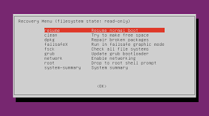

Part five: Vi and Ubuntu recovery mode¶
vi¶
Vi is the most powerful edit tools in Linux, maybe you are familiar with gedit but sometimes only vi can nelp you like recovery mode.
- i key means using insert mode.
- esc key means exiting insert mode.
- x key means deleating character on the same place of your cursor.
- dd meand double **d**key, which is deleate the line on the cursor line.
- :wq means save and exit.
- :q! means forcing exit.
recovery mode¶
At first, you need to know how to get into recovery mode and when. If you edit profile wrong lead to cannot open your OS then you need recovery mode. Push ESC key as soon as open OS. Then choose the recovery mode. Then you will see picture like following.
- First, choose fsck in order to get access to command you had used.
- Second, choose root then you can use command.
- Third, if you remember where is wrong and it is a file the vi can help to fix it. If you install some thing wrong then remove it.